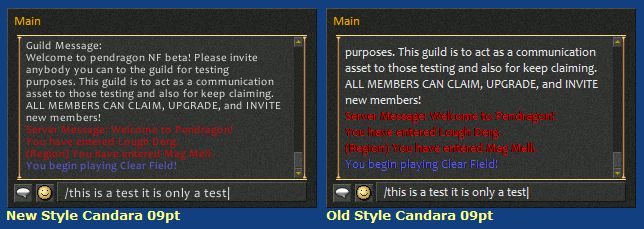

Chat Font
These options allow you to pick the style and size of the font used for text that appears in the Chat window. You can choose between New and Old style fonts.
New Style (True Type)
What is unique about these fonts is the game allows you to adjust the size of them as you play using the Font Resize menu option from the popup that appears when you right click in the chat window.

Old Style (Bitmap)
Unlike the New Style fonts, you cannot adjust the size of Old Style fonts as you play. However, you can select from various font sizes using this program before you login or rezone.

Additional Information
Most of the New and Old style fonts are displayed using a Clear Type method which smoothes the rounded edges of the characters to make them appear less jagged. Unfortunately this has a side effect of making them appear "fuzzy" when rendered in smaller sizes and with various combinations of foreground and background colors.
To overcome the fuzziness it may be necessary to change the color of the font text message or select a different skin background.
